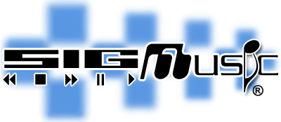

SigMusic is dedicated to the study and production of electronic and computer music.
To keep informed of our current activities, subscribe to our mailing list. SigMusic currently meets at 7pm on Wednesdays in the ACM office.
To keep informed of our current activities, subscribe to our mailing list. SigMusic currently meets at 7pm on Wednesdays in the ACM office.
Projects
Tacchi
 Tacchi is SigMusic's 46" fully multitouch table. Complete with 2 cameras and 4 lazers, Tacchi is capable of unlimited users. SigMusic first unveiled Tacchi at Engineering Open House in 2010, winning "Best Undergraduate Student Research" as well as the Lockheed Martin Computer Science Award.
Tacchi is SigMusic's 46" fully multitouch table. Complete with 2 cameras and 4 lazers, Tacchi is capable of unlimited users. SigMusic first unveiled Tacchi at Engineering Open House in 2010, winning "Best Undergraduate Student Research" as well as the Lockheed Martin Computer Science Award.
Read More...